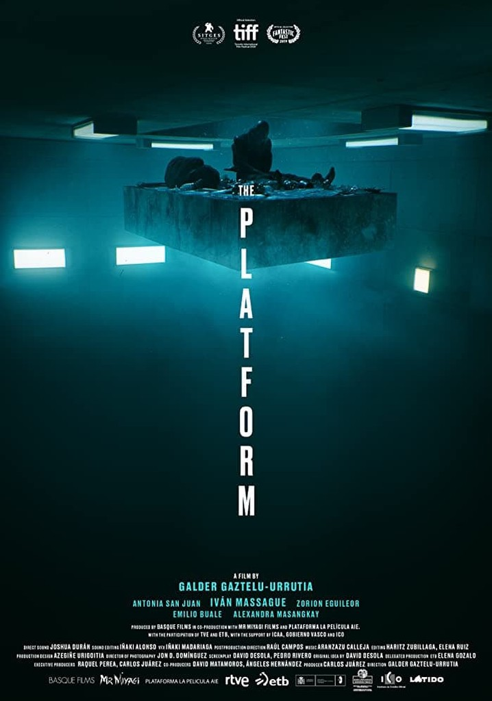

Will Smith'in oynadığı; içerisinde aksiyonun, gerilimin, korkunun eksik olmadığı bir nevi kıyamet temalı film.
İlginç bir temaya sahip olan The Platform paraya muhtaç olan bir grup insanın seviye sistemiyle katlı bir alana sokuyorlar. İnsanlar en üste ulaşmak için birbirlerini yok etmenin yolunu arıyor.

Bu serinin önceki filmlerini baştan sona izlememiştim ama bu gerçekten beni içine çekti. Kurgusu gerçekten çok güzel